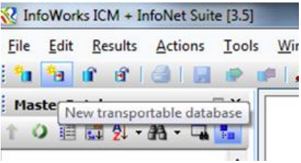

Background
Recently I've been working on multiple projects across multiple different ICM versions. I've been using ICM for the best part of 4 years now, and initially I thought the transportable database format was great! Transportable database are simply compressed standalone databases and allow for quick transfer of modelling items.
Initially I thought transportable databases were great, however over the past few months I have had continual frustrations with ICMTs and in this article I wish to discuss the reasons why.
What are ICMTs?
Transportable databases are one of the easiest (and fundamental) methods of sharing InfoWorks ICM and InfoNet data. Quite often a consultant is required to submit their hydraulic models to the client as a transportable database.
To create a transportable database simply click on the "New transportable database" button. After selecting a location for the transportable database you can copy and paste database objects into it from the database explorer.
Why do we use them?
ICMTs are used for a multitude of reasons. Below I have highlighted a few reasons why you might use an ICMT.
Why change?
Several reason really:
What is the alternative?
For a long while Innovyze has worked very hard in making alternative open file formats. See the table below:
| Model Object | File extension |
|---|---|
| Waste Water Profile | r1c2 |
| Trade Water Profile | r2c2 |
| Rain Event | RED and CSV |
| Inflow | r3c2 |
...
It is unfathomable to me that companies are using InfoWorks data formats to transport their data even though there are massive backwards compatibility issues with the software. Versions of the software don't even know the version of software the ICMT, Snapshot etc. was built in! If I didn't have my online transportable database version checker, I would be at a complete loss as to which ICM version my transportable databases were made in. So why on earth are water companies using this format to transport data?
I feel they are mostly ignorant to these issues... So they end up walking into the trap where a consultant supplies data they can't even view! It all ends up being a big waste of everybodies time...
Now bare in mind, I don't think this is anyone's fault per se. I think it is quite clear that InfoWorks software was never designed for large databases, models or simulations, and I think this is mostly because InfoWorks is legacy software. But I think it's really time that water companies step out of the closet and get truly transportable data. Data they can open in QGIS for free. Data they have full access to, and data which is even human readable!